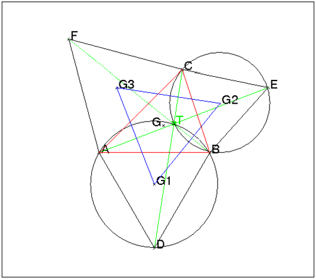
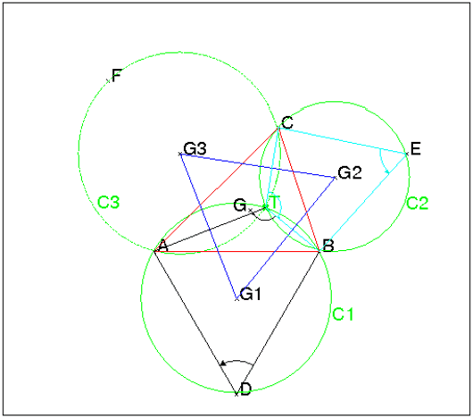
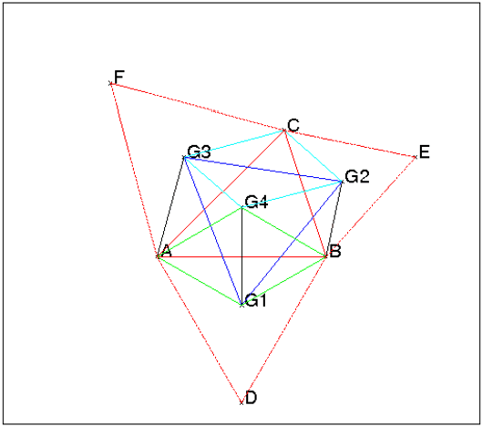
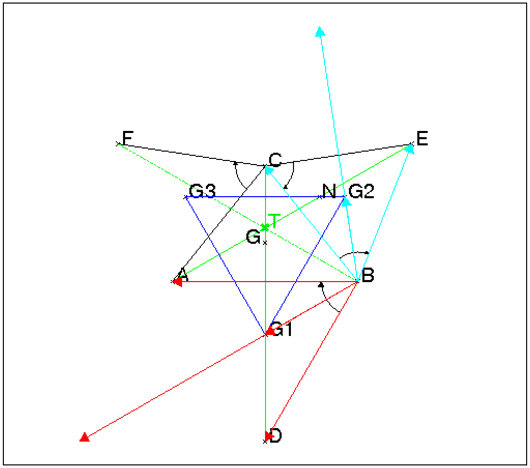
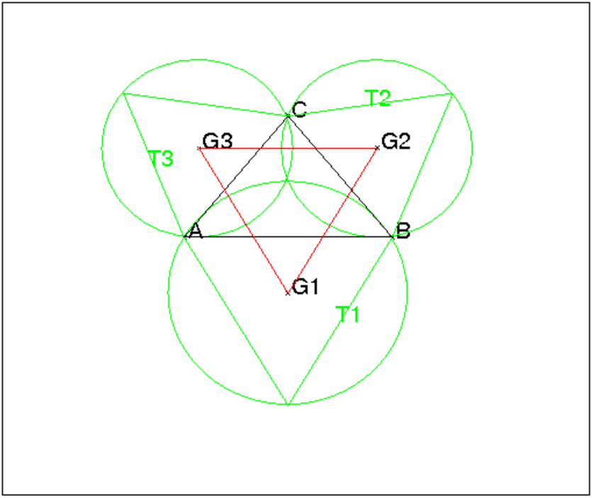

Soit un triangle quelconque ABC.
On construit à l’extérieur du triangle ABC les triangles équilatèraux
BAD, CBE et ACF qui ont pour centre de gravité : G1, G2 et G3.
On a les propriétés suivantes :
Le triangle G1G2G3 est équilatéral et a même centre de gravité que
le triangle ABC.
Les droites AE, DC, BF sont concourantes en un point T qui s’appelle le
point de Torricelli.
Le point T est aussi le point de concours des cercles circonscrits aux
triangles BAD, CBE et ACF.

Pour faire cette figure, on tape dans un éditeur de programme :
A:=point(-2.,-1.,'affichage'=0);
B:=point(2.,-1,'affichage'=0);
C:=point(1.,2,'affichage'=0);
triangle_equilateral(B,A,D);
triangle_equilateral(C,B,E);
triangle_equilateral(A,C,F);
segment(A,E,affichage=2);
segment(C,D,affichage=2);
segment(B,F,affichage=2+ligne_tiret);
T:=inter_droite(droite(A,E),droite(C,D),affichage=2+
epaisseur_point_2);
circonscrit(A,B,D);
circonscrit(C,B,E);
G1:=isobarycentre(A,B,D);
G2:=isobarycentre(C,B,E);
G3:=isobarycentre(A,C,F);
G:=isobarycentre(A,C,B,affichage=quadrant2);
triangle(A,B,C,affichage=1);
triangle(G1,G2,G3,affichage=4);
On trace les cercles C1, C2 et C3 circonscrits aux triangles ADB,
BEC et CFA de centres respectifs G1, G2 et G3.
Pour faire la figure, on tape :
A:=point(-2.,-1.,'affichage'=0); B:=point(2.,-1,'affichage'=0); C:=point(1.,2,'affichage'=0); D:=rotation(B,pi/3,A); E:=rotation(C,pi/3,B); F:=rotation(A,pi/3,C); C1:=circonscrit(A,B,D,affichage=2); C2:=circonscrit(C,B,E,affichage=2); C3:=circonscrit(C,A,F,affichage=2+ligne_tiret); G1:=isobarycentre(A,B,D); G2:=isobarycentre(C,B,E); G3:=isobarycentre(A,C,F); G:=isobarycentre(A,C,B,affichage=quadrant2); triangle(A,B,C,affichage=1); triangle(G1,G2,G3,affichage=4); T:=inter(C1,C2,affichage=2+epaisseur_point_2)[1]; angle(D,B,A,""); angle(T,B,A,""); angle(T,C,B,""); angle(E,C,B,"");

Montrons que ces trois cercles sont concourants en un point T.
Soit T le point d’intersection de C1 et C2, on a :
BDA=π/3.
Comme l’angle BTA intercepte le même arc BA que l’angle
BDA de C1 on a :
BTA=π/3 ou BTA=2π/3 de même :
BTC=π/3 ou BTC=2π/3 donc :
soit CTA=BTC+BTA si TB est entre TC et TA
soit CTA=|BTC−BTA| sinon.
Donc
CTA=π/3 ou CTA=2π/3 et donc
CAFT sont cocycliques.
On a donc montré que T se trouve sur C3.
Comme G1G2 (resp G1G3 ou G2G3) est perpendiculaire à BT (resp à AT ou à CT) et que
G2G1G3+G1G2G3+G1G3G2=π on a :
G2G1G3=G1G2G3=G1G3G2=π/3
ce qui prouve que le triangle G1G2G3 est équilatèral.
Soit G4 le symétrique de G1 par rapport à AB.

Pour faire cette figure, on tape dans un éditeur de programme :
A:=point(-2.,-1.,'affichage'=0); B:=point(2.,-1,'affichage'=0); C:=point(1.,2,'affichage'=0); D:=rotation(B,pi/3.,A); E:=rotation(C,pi/3.,B); F:=rotation(A,pi/3.,C); G1:=isobarycentre(A,B,D); G2:=isobarycentre(C,B,E); G3:=isobarycentre(A,C,F); G4:=symetrie(droite(A,B),G1); G:=isobarycentre(A,C,B,affichage=quadrant2); triangle(A,B,C,affichage=1); triangle(G1,G2,G3,affichage=4); segment(A,G1); segment(A,G3); segment(G4,G3); segment(G4,G2); segment(C,G2); segment(C,G3); segment(B,G4); segment(A,G4); segment(B,G2); segment(B,G1); segment(G4,G1); segment(A,F,affichage=1+ligne_tiret); segment(C,F,affichage=1+ligne_tiret); segment(C,E,affichage=1+ligne_tiret); segment(E,B,affichage=1+ligne_tiret); segment(B,D,affichage=1+ligne_tiret); segment(A,D,affichage=1+ligne_tiret);
Les triangles AG4G3 et G4BG2 sont égaux et sont des triangles
semblables à ABC en effet :
le quadrilatère AG1BG4 est un losange d’angle A=π/3
(4 cotés égaux à la diagonale G1G4), donc
l’angle G4AG3 est égale à l’angle BAC,
AG4=AG1=BG1=BG4=AB/√3,
AG3=CG3=AC/√3.
Le triangle AG4G3 est donc semblable au triangle ABC avec comme rapport
de similitude 1/√(3).
De même l’angle G4BG2 est égale à l’angle ABC
et,
BG2=CG2=BC/√3
donc le triangle G4BG2 est semblable au triangle ABC avec comme rapport
de similitude 1/√3.
On en déduit que :
BG2=G4G3 et AG2=G4G2 et donc que le quadrilatère G2CG3G4 est
un parallélogramme.
Les triangles G1G4G3 et G1BG2 sont donc égaux (l’angle
G3G4G1=CBA+pi/3=G2BG1) et ces deux
triangles se déduisent l’un de l’autre par une rotaion de centre G1 et
d’anble π/3 donc
G1G3=G1G2 et l’angle G2G1G3=π/3.
L’isobarycentre de A,B,C est aussi l’isobarycentre de G1,G4,C car le
quadrilatère AG1BG4 est un losange.
L’isobarycentre de G1,G4,C est aussi l’isobarycentre de G1,G2,G3 car
le quadrilatère CG3G4G2 est un parallélogramme.
Donc ABC et G1G2G3 ont même centre de gravitè.
Soit ABC un triangle quelconque. On construit à l’extérieur du triangle
ABC les triangles équilatèraux : ABD, BCE et ACF.
1/ Montrer que AE=BF=CD.
2/ Montrer que AE, BF et CD sont concourantes.
3/ Théorème de Napoléon :
On note G1, G2 et G3 les centres de gravité des triangles
ABD, BCE et ACF.
Montrer que le triangle G1G2G3 est équilatèral.
A:=point(-2.,-1.,'affichage'=0);
B:=point(2.,-1,'affichage'=0);
C:=point(0.,1.5,'affichage'=0);
D:=rotation(B,pi/3.,A);
E:=rotation(C,pi/3.,B);
F:=rotation(A,pi/3.,C);
segment(A,E,affichage=2);
segment(C,D,affichage=2);
segment(B,F,affichage=2+ligne_tiret);
T:=inter_droite(droite(A,E),droite(C,D),affichage=2+
epaisseur_point_2);
G1:=isobarycentre(A,B,D);
G2:=isobarycentre(C,B,E);
G3:=isobarycentre(A,C,F);
G:=isobarycentre(A,C,B,affichage=quadrant2);
triangle(A,B,C,affichage=1);
triangle(G1,G2,G3,affichage=4);
angle(B,D,A,"");
angle(B,C,E,"");
angle(C,E,B,"");
angle(C,A,F,"");
vecteur(B,G1,affichage=1)
vecteur(B,A,affichage=1);
vecteur(B,D,affichage=1);
vecteur(B,B+3*(G1-B),affichage=1);
vecteur(B,G2,affichage=6)
vecteur(B,E,affichage=6);
vecteur(B,C,affichage=6);
vecteur(B,B+3*(G2-B),affichage=6);
N:=rotation(C,pi/3.,T);

On suppose le triangle ABC direct.
1/ La rotation de centre B et d’angle −π/3 transforme :
D en A et C en E donc:
DC=AE et
(DC,AE)=−π/3.
De même la rotation de centre C et d’angle −π/3 transforme :
E en B et A en F donc :
AE=FB et
(EA,BF)=−π/3.
On montre, en utilisant les vecteurs, que G1G2G3 est équilatèral,
on a :
BG1=1/3(BD+BA)
et
BG2=1/3(BE+BC)
CG2=1/3(CE+CB)
et
CG3=1/3(CF+CA)
donc
G2G1=1/3(EA+CD)
et
G2G3=1/3(BF+EA)
BF (resp EA) est le transformé de
EA (resp CD) par une rotation d’angle
−π/3 donc G2G3 est le transformé de
G2G1 par une rotation d’angle −π/3 donc le triangle
G1G2G3 est équilatèral.
2/ Soit T le point d’intersection de AE et de CD. D’après la
première question :
(TC,TE)=(DC,AE)=−π/3.
On construit alors le point N sur AE pour que le triangle TCN soit
équlatéral et donc (CN,CT)=−π/3.
Ainsi, la rotation de centre C et d’angle −π/3 transforme AE en FB
et le point N de AE en le point T de BF donc BF passe par T.
3/ Autre démonstration de G1G2G3 est équilatèral.
On construit :
G4 le symétrique de G1 par rapport à AB,
G5 le symétrique de G2 par rapport à BE,
donc les triangles AG1G4, BG1G4, BG2G5 sont équilatéraux.
La rotation de centre B et d’angle −π/3 transforme :
G1 en G4 et G2 en G5 donc G1G2=G4G5 et
(G2G1,G5G4)=−π/3.
On va montrer que le quadrilatère
G3G2G5G4 est un parallélogramme et on aura ainsi montrer que le triangle G1G2G3 est équilatèral puisque :
G3G2=G4G5=G1G2 et
(G2G3,G5G4)=0 donc
(G2G3,G2G1)=π/3.
Les triangles AG4G3 et G4BG2 sont semblables au triangle ABC
(même angle A (resp B) et deux cotés proportionnels) et
comme AG4=G4B, les triangles AG4G3 et G4BG2 sont égaux.
Donc G3G4=BG2=BG5=G2G5.
On a :
(G4B,G4G3)=(G4A,G4G3)+2π/3=(BG4,BG2)+2π/3=
(BG4,BE)+2π/3−π/6=(BG4,BE)+π/2.
Donc G3G4 est paralléle à G2G5 puisque ces deux droites sont perpendiculaires à BE. On a ainsi montrer que le quadrilatère
G3G2G5G4 est un parallélogramme, ce qui termine la démonstration.
Soient a,b,c,g1,g2,g2 les affixes de A,B,C,G1,G2,G3 on a :
si le triangle ADB est de sens direct, A se déduit de B dans la rotation de centre g1
et d’angle 2*π/3 donc puisque j=ei2π/3:
a−g1=j*(b−g1)
de même si les triangles BEC et CFA sont de sens direct on a :
b−g2=j*(c−g2)
c−g3=j*(a−g3)
On en déduit que :
(1−j)g1=a−jb et
(1−j)g2=b−jc et
(1−j)g3=c−ja donc
(1−j)(g1−g2)=a−b(1+j)+jc=a+jc+j2b puisque 1+j+j2=0 et
(1−j)(g2−g3)=b−c(1+j)+ja=j(a+jc+j2b) puisque j3=1 donc
(1−j)(g2−g3)=j(1−j)(g1−g2) et après division par j−1 on a
g2−g3=j(g1−g2) et
cette égalité prouve que le triangle G1G2G3
est équilatèral.
On a de plus :
(1−j)g1+(1−j)g2+(1−j)g3=a−jb+b−jc+c−ja=(1−j)(a+b+c) donc
(a+b+c)/3=(g1+g2+g3)/3 ce qui veut dire que les triangles ABC et
G1G2G3 ont même centre de gravité.
On suppose que le point A est à l’origine du repère et que
le point B est le point d’affixe 2.
Le point C a comme affixe a+ib, avec a et b quelconques.
Pour faire la figure on suppose que a=−1 et que b=−1.
On tape les instructions suivantes qui se trouvent dans le fichier
napoleon :
assume(a=0); assume(b=1.5); A:=point(-2,-1); B:=point(2,-2); C:=point(a,b); T1:=couleur(triangle_equilateral(B,A),vert); T2:=couleur(triangle_equilateral(C,B),vert); T3:=couleur(triangle_equilateral(A,C),vert); couleur(circonscrit(T1),vert); couleur(circonscrit(T2),vert); couleur(circonscrit(T3),vert); AB:=segment(A,B); AC:=segment(A,C); CB:=segment(C,B); G1:=normal(isobarycentre(T1)); G2:=normal(isobarycentre(T2)); G3:=normal(isobarycentre(T3)); G1G2:=couleur(segment(G1,G2),rouge); G2G3:=couleur(segment(G2,G3),rouge); G3G1:=couleur(segment(G3,G1),rouge); normal(longueur2(G1,G2)-longueur2(G2,G3)); normal(longueur2(G1,G3)-longueur2(G3,G2));

On obtient la figure et comme réponses :
0 à normal(longueur2(G1,G2)-longueur2(G2,G3));,
0 à normal(longueur2(G1,G2)-longueur2(G1,G3));,
ce qui prouve que le triangle G1G2G3 est équilatèral.